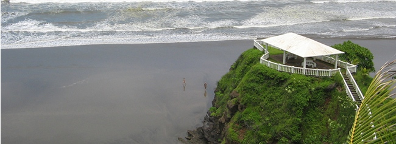

Sobre el Surf
¿Qué es el surf?
El surf se define esencialmente como un deporte acuático, que consiste en deslizarse encima de una tabla sobre las olas.
Hasta aquí parece sencillo, pero, la base del surf es permanecer sobre nuestra tabla el mayor tiempo posible. De este
modo podemos ponernos de pie sobre la tabla, hacer paredes o realizar diferentes maniobras, giros o trucos apoyados en
la fuerza de las olas.
El Salvador cuenta con unas olas increibles y que permancen a lo largo del año debido a su ubicación geográfica,
lo cual lo hace un excelente destino para todos los turistas internos y extranjeros que desean practicar el surf.
A lo largo del circuito de playas también hay lugares que se centran en la enseñanza de este deporte para todas
aquellas personas que deseen aprenderlo.
Mejores playas para surfear
1. Playa El Sunzal
Una de las mejores playas salvadoreñas para la práctica del surf y de otras disciplinas acuáticas es la Playa El Sunzal, ubicada en el departamento de La Libertad.
El Sunzal es uno de los lugares más buscados por los amantes del surf al visitar tierras salvadoreñas e incluso, se convierte en la localidad oficial para diversas competencias de surf que se realizan en el país, convirtiéndola en el destino ideal si te apasionan las olas y la arena.
Puedes llegar si buscas el área del Puerto de la Libertad.
2. Playa El Tunco
Siempre en La Libertad, Playa El Tunco es otra de las más atractivas para los surfistas que visitan El Salvador.
A 37 kilómetros de San Salvador, El Tunco es una de las mayores atracciones playeras en tierra salvadoreña y se caracteriza por su peculiar formación rocosa que resalta con el atardecer.
Es conocida también por sus fiestas cada fin de semana y por ser un auténtico carnaval con música en vivo y shows espectaculares, llenos de fiesta, baile, comida y buena música.
Playa El Tunco también ofrece el oleaje perfecto para la práctica del surf, no solo para los expertos, sino también para principiantes o para aquellos curiosos que deseen vivir una nueva experiencia en su vida.
Surfistas locales ofrecen por tan solo $15 clases de surf a aquellos que no cuentan con experiencia ni conocimiento sobre cómo manejar las olas, siendo bastante seguras y muy divertidas.
También se pueden alquilar tablas de surf desde $20 en adelante, siendo la mejor época para surfear entre los meses de Abril y Junio que es cuando el oleaje se encuentra en su punto más alto.
3. Punta Mango
Fuera de La Libertad también puedes encontrar lugares espectáculares para la práctica del surf. Uno de ellos es Punta Mango, en el departamento de Usulután, del lado oriental en El Salvador. Es una de las playas más especializadas en surf, ya que su afluencia es, en su mayoría, de surfistas internacionales y expertos en deportes acuáticos. A diferencia de El Tunco y El Sunzal, Punta Mango se caracteriza por su dedicación completa al surf, siendo muy visitada por turistas expertos en el tema.
4. Playa el Zonte
Ubicada en el departamento de La Libertad, en el kilómetro 53 de la Carretera del Litoral, y a cuarenta y cinco minutos del Aeropuerto Internacional de Comalapa y también de la Ciudad de San Salvador. Es una pequeña aldea dividida por la desembocadura de un río que forma la punta derecha rocosa donde rompen las olas. Dentro de la pequeña villa se encuentran hospedajes y hoteles para mochileros.
5. Punta Roca
A 25 minutos de la capital, y cuarenta desde el Aeropuerto Internacional de Comalapa, se encuentra esta playa. Que ofrece hoteles y restaurantes para pasar un gran ambiente familiar. Es un lugar muy visitado por surfistas extranjeros y nacionales debido a su cercanía a las playas El Sunzal y La Paz.
6. Playa El Cuco
Se encuentra en el departamento de San Miguel, es muy frecuentada por los salvadoreños, especialmente los que residen en el Oriente del país, quienes gustan de la tranquilidad de sus aguas, las extensas áreas de arena negra, muy factibles para practicar fútbol, vóleibol, jogging, entre otras. También la bondad de su oleaje permite la natación, el surf y pesca, entre otras alternativas.
7. Playa Mizata
Santa Maria Mizata es un municipio privilegiado por su playa, ubicada en el departamento de Sonsonate entre los kilómetros 86 y 88 de la carretera litoral. Es una playa enfocada en formar parte de la ruta de surf y playas desarrollada por el Ministerio de Turismo.
8. Playa Las Flores
Ubicada unos cinco kilómetros al oeste de la reconocida playa El Cuco, se encuentra en el departamento de Chirilagua, San Miguel. Posee espectaculares acantilados y rocas salientes bañadas por sus impecables aguas verdes. Se dice que posee las olas más impresionantes de Latinoamérica.